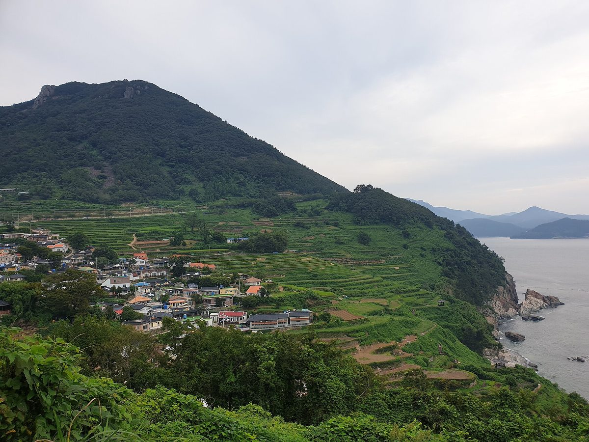

류경완 남해군수, 에너지 자립의 섬 군정 핵심으로…배전망 ESS·분산에너지 특화지역 공모 대응, 햇빛소득마을 수익 주민에게 돌리겠다

취임 100일 인터뷰서 송배전망 수용 용량 부족을 재생에너지 확대의 걸림돌로 꼽아…한국에너지공단 이사장에게 ESS 사업 유치·햇빛소득마을 활성화 건의, 공모 선정·마을 수는 아직 없어
류경완 남해군수가 취임 100일을 맞아 '정원의 섬 조성'과 함께 '에너지 자립의 섬'을 군정의 두 핵심 사업으로 꼽고, 마을공동체 태양광과 햇빛소득마을 사업으로 수익이 지역과 주민에게 돌아가게 하겠다는 계획을 밝혔다. 류 군수는 군민의 재생에너지 관심은 높지만 송배전망 수용 용량이 모자라 확대가 어렵다며 "이 문제를 풀어야 에너지 자립과 주민소득 확대도 가능하다"고 말했다. 이를 위해 배전망 에너지저장장치(ESS) 구축과 분산에너지 특화지역 같은 정부 공모사업에 적극 대응하고, 건축물 재생에너지 설비 지원도 늘리겠다는 것이 군수의 구상이다. 류 군수는 최근 남해를 찾은 한국에너지공단 이사장에게 ESS 사업 유치와 햇빛소득마을 활성화를 건의했다고 밝혔지만, 공모 선정이나 ESS 유치가 정해진 것은 아니며 남해에서 추진할 햇빛소득마을의 수와 용량, 예산도 이번 인터뷰에서는 나오지 않았다. 류 군수는 재생에너지 확대와 농어촌기본소득 정착으로 지역경제의 자립 기반을 넓히겠다는 방침이며, 추가경정예산으로 4억 원을 확보한 정원의 섬 종합계획 수립 용역을 11월에 시작하고 2031년 개통 예정인 남해~여수 해저터널에 맞춰 체류형 관광 기반도 다지겠다고 했다.
시민에너지 관점
섬 군의 군수가 재생에너지 확대의 첫 걸림돌로 군민의 무관심이 아니라 송배전망 수용 용량을 꼽았다는 것은, 햇빛소득마을을 하고 싶어도 전기를 보낼 길이 없는 지방의 사정을 그대로 보여 준다. 계통이 막힌 섬에서 마을 발전소는 무리라는 걱정도 있지만, 스코틀랜드 오크니 제도는 2009년부터 망 상태에 맞춰 발전기 출력을 실시간으로 조절하는 능동형 배전망 관리로 더 많은 발전기를 망에 붙였고, 섬 곳곳의 공동체 소유 풍력발전기가 낸 수익을 마을 사업에 써 왔다. 배전망 ESS를 들이더라도 설비와 수익이 바깥 사업자에게만 가면 막힌 계통을 뚫은 이익은 섬을 떠나고, 마을 협동조합이 ESS와 발전소의 지분을 함께 가져야 에너지 자립이 주민 소득으로 이어진다. 남해군은 공모 사업계획을 짤 때부터 마을 협동조합의 지분과 수익 배분 기준을 계획서에 함께 적어야 한다.
출처: 경남도민일보 2026-10-28 이영호 원문 보기
韓国・南海郡のリュ・ギョンワン郡守、エネルギー自立の島を郡政の柱に…配電網ESS・分散エネルギー特化地域の公募に対応、太陽光所得村の収益を住民へ
就任100日のインタビューで送配電網の受け入れ容量不足を再エネ拡大の障害に挙げる…韓国エネルギー公団理事長にESS事業の誘致と太陽光所得村の活性化を要望、公募の選定や村の数はまだ示されず
韓国慶尚南道南海郡のリュ・ギョンワン郡守は就任100日を迎え、「庭園の島づくり」とともに「エネルギー自立の島」を郡政の二大中核事業に挙げ、村の共同体による太陽光と太陽光所得村の事業を通じて収益が地域と住民に還元されるようにする計画を明らかにした。リュ郡守は、郡民の再生可能エネルギーへの関心は高いものの送配電網の受け入れ容量が足りず拡大が難しいとして、「この問題を解かなければエネルギー自立も住民所得の拡大も実現できない」と述べた。そのために配電網のエネルギー貯蔵システム（ESS）構築や分散エネルギー特化地域といった政府の公募事業に積極的に対応し、建築物の再エネ設備への支援も広げるというのが郡守の構想だ。リュ郡守は最近南海を訪れた韓国エネルギー公団の理事長に、ESS事業の誘致と太陽光所得村の活性化を要望したと明らかにしたが、公募の選定やESSの誘致が決まったわけではなく、南海で進める太陽光所得村の数や容量、予算も今回のインタビューでは示されなかった。リュ郡守は再エネの拡大と農漁村基本所得の定着によって地域経済の自立基盤を広げる方針で、補正予算で4億ウォンを確保した庭園の島総合計画策定の委託調査を11月に始め、2031年開通予定の南海〜麗水海底トンネルに合わせて滞在型観光の基盤も固めるとした。
市民エネルギーの視点
島の郡の首長が再エネ拡大の最初の障害として、郡民の無関心ではなく送配電網の受け入れ容量を挙げたことは、太陽光所得村をやりたくても電気を送る道がない地方の事情をそのまま映している。系統がふさがった島で村の発電所は無理だとの懸念もあるが、スコットランドのオークニー諸島は2009年から、系統の状態に合わせて発電機の出力をリアルタイムで調整するアクティブ・ネットワーク・マネジメントで、より多くの発電機を系統につなぎ、島々の共同体所有の風力発電機が生んだ収益を地域の事業に使ってきた。配電網ESSを導入しても設備と収益が外部の事業者にだけ渡れば、ふさがった系統を開いた利益は島から出ていき、村の協同組合がESSと発電所の持ち分をともに持ってこそエネルギー自立が住民の所得につながる。南海郡は公募の事業計画を練る段階から、村の協同組合の持ち分と収益配分の基準を計画書に書き込むべきだ。
出典: 慶南道民日報 2026-10-28 イ・ヨンホ 原文を読む
韩国南海郡守Ryu Gyeong-wan把能源自立之岛列为郡政核心…应对配电网储能和分布式能源特区公募，让阳光收入村收益回到居民手中
在就任100天采访中指出输配电网接纳容量不足是扩大可再生能源的障碍…已向韩国能源公团理事长建议引进储能项目、激活阳光收入村，公募入选和村庄数量尚无定论
韩国庆尚南道南海郡郡守Ryu Gyeong-wan在就任100天之际，把“花园之岛建设”和“能源自立之岛”列为郡政两大核心项目，并提出计划，通过村级社区光伏和阳光收入村项目，让收益回到地方和居民手中。Ryu郡守表示，郡民对可再生能源关注度很高，但输配电网接纳容量不足，难以扩大，“只有解决这个问题，才能实现能源自立和增加居民收入”。为此，郡守设想积极应对配电网储能系统（ESS）建设和分布式能源特化地区等政府公募项目，并扩大对建筑物可再生能源设备的支持。Ryu郡守透露，已向近期到访南海的韩国能源公团理事长建议引进储能项目、激活阳光收入村，但公募入选和储能引进尚未确定，此次采访也没有提到南海将推进的阳光收入村数量、装机容量和预算。Ryu郡守的方针是通过扩大可再生能源和落实农渔村基本收入来拓宽地方经济的自立基础，并将于11月启动已通过追加预算确保4亿韩元的花园之岛综合规划编制研究，同时配合计划于2031年开通的南海至丽水海底隧道，夯实停留型旅游基础。
市民能源视角
一个海岛郡的郡守把扩大可再生能源的首要障碍归结为输配电网接纳容量，而不是郡民缺乏兴趣，这如实反映了地方“想办阳光收入村，却没有送电通道”的处境。有人担心在电网受阻的海岛建村级电站不现实，但苏格兰奥克尼群岛自2009年起采用根据电网状态实时调节发电出力的主动配电网管理，让更多发电机接入电网，岛上各处社区所有的风电机组也把收益用于社区项目。即使引进配电网储能，如果设备和收益只归外部企业，打通电网带来的利益就会流出海岛；只有村级合作社同时持有储能和电站的股份，能源自立才会变成居民收入。南海郡应从编制公募项目计划时起，就把村级合作社的持股和收益分配标准写进计划书。
来源: 庆南道民日报 2026-10-28 Lee Young-ho 查看原文
Namhae County head Ryu Gyeong-wan puts an energy self-reliant island at the core of his agenda, plans bids for distribution-grid ESS and a distributed energy zone and wants Sunlight Income Village profits to go to residents
In a 100-day interview he named limited transmission and distribution capacity as the main barrier to more renewables; he has asked the head of the Korea Energy Agency to bring ESS projects and support Sunlight Income Villages, but no bid has been won and no village numbers given
Ryu Gyeong-wan, head of Namhae County in South Gyeongsang Province, South Korea, marking 100 days in office, named an "energy self-reliant island" alongside a "garden island" as the two core projects of his administration, and set out plans to ensure that profits from village community solar and Sunlight Income Village projects go to the area and its residents. Residents are keen on renewable energy but expansion is difficult because the transmission and distribution grid lacks capacity, Ryu said, adding that "only by solving this problem can we achieve energy self-reliance and raise residents' incomes." To that end, he intends to pursue government competitions such as those for distribution-grid energy storage systems (ESS) and distributed energy special zones, and to expand support for renewable equipment on buildings. Ryu said he had recently asked the head of the Korea Energy Agency, during a visit to Namhae, to bring ESS projects to the county and to boost Sunlight Income Villages, but no competition has been won and no ESS project secured, and the interview gave no figures for the number, capacity or budget of Sunlight Income Villages planned in Namhae. Ryu aims to widen the base for a self-reliant local economy through more renewables and a settled rural basic income, and said a study for a garden island master plan, funded with 400 million won secured in a supplementary budget, will start in November, while the county prepares for longer-stay tourism ahead of the Namhae–Yeosu undersea tunnel due to open in 2031.
Citizen Energy View
That an island county head names grid capacity, not residents' indifference, as the first barrier to more renewables shows plainly the situation of rural areas that want Sunlight Income Villages but have no way to send the power out. Some worry that village power plants are unrealistic on an island with a congested grid, but Scotland's Orkney Islands have since 2009 used active network management, which adjusts generator output in real time to grid conditions, to connect more generators, and community-owned wind turbines across the islands have spent their revenue on local projects. Even if distribution-grid ESS arrives, the gains from unblocking the grid will leave the island if the equipment and revenue go only to outside companies; only when village cooperatives hold stakes in both the ESS and the power plants will energy self-reliance turn into residents' income. Namhae County should write village cooperatives' stakes and revenue-sharing rules into its plans from the moment it drafts its competition bids.
Source: Gyeongnam Domin Ilbo 2026-10-28 Lee Young-ho Read the original